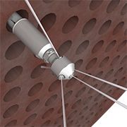
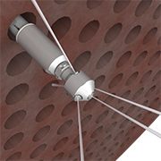
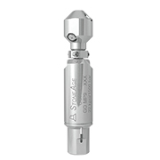
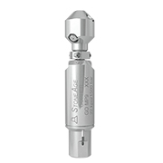
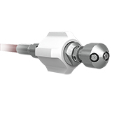
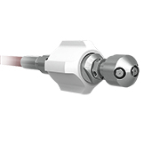
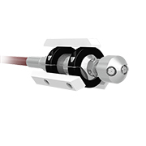
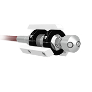
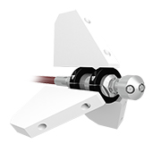
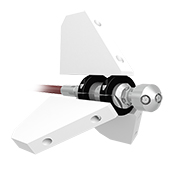

 

 

 

 

Gopher
The Gopher self-rotary tool is ideal for cleaning evaporator tubes and a variety of process lines. It is ideal for cutting through coke, polymers, coatings and latex. The Gopher is offered in two pressure ranges up to 40,000 psi (2800 bar).
The Gopher can be paired with StoneAge automated tube cleaning systems to facilitate hands-free lancing of large diameter tubes such as those found in industrial evaporators and condensers.
- Self-rotary, speed controlled tools provide complete internal coverage with optimum jet delivery
- Two head options available: 7 port unplugging option for maximum forward hitting power and a 6 port polishing head for IRIS inspection polishing
- Multiple jetting configurations means the same tool can be re-jetted to match a wide variety of cleaning applications—great for when you need more pulling force or forward hitting power
| Tool Family | Gopher | |
|---|---|---|
| Tool Model | GO-MP9 | |
| Pressure Range | 2–22k psi | 140–1500 bar |
| Flow Range | 8–25 gpm | 30–95 l/min |
| Flow Coefficient | 0.84 Cv | |
| Rotation Speed | 600-1000 rpm | |
| Inlet Connection | 9/16 MP | |
| Port Size | 1/8 NPT (P2) | |
| Nozzle Type | AP2 | |
| Port Plug | GP 025-P2SS | |
| Swivel Diameter | 1.6 in. | 42 mm |
| Swivel Length | 7.8 in. | 200 mm |
| Swivel Weight | 2.3 lb | 1.0 kg |
| Head Weight | 0.60–0.75 lb | 0.27–0.34 kg |
| Maximum Water Temp. | 160 °F | 70 °C |
| Tool Family | Gopher | |
|---|---|---|
| Tool Model | GO-H9-C | |
| Pressure Range | 22k–40k psi | 1500–2800 bar |
| Flow Range | 4–10 gpm | 15–40 l/min |
| Flow Coefficient | 0.30 Cv | |
| Rotation Speed | 600-1000 rpm | |
| Inlet Connection | 9/16 HP | |
| Port Size | 1/4-28 UNF (S4) | |
| Nozzle Type | OS4 | |
| Port Plug | OS4 002 | |
| Swivel Diameter | 1.6 in. | 42 mm |
| Swivel Length | 7.8 in. | 200 mm |
| Swivel Weight | 2.6 lb | 1.2 kg |
| Head Weight | 0.60–0.75 lb | 0.27–0.34 kg |
| Maximum Water Temp. | 160 °F | 70 °C |
Gopher GO-H9-C Tool Maintenance
Gopher GO-H9-C Tool Maintenance
Our expert staff is available Monday through Friday 8AM - 5PM MST to answer questions and offer advice on your toughest cleaning applications.